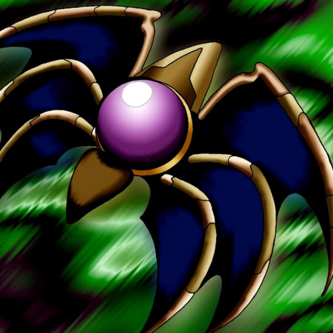

Dark Shade

STATS
ATK: 1000
DEF: 1000
DECK COST
Deck Cost per Card: 20
Fusion List (2 Possible Fusions)
Dark Shade + Fungi of the Musk = Darkworld Thorns
Dark Shade + Mystical Sheep #2 = Mystical Sheep #1